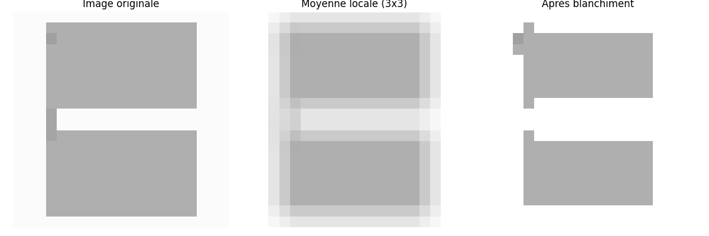

Principe
Ce programme analyse une image en niveaux de gris pour y compter le nombre d’objets distincts. Un "objet" est défini comme un groupe de pixels connectés qui ne sont pas blancs (c’est-à-dire avec une intensité différente de 255).
Pour faciliter cette détection, l’image est d’abord blanchie progressivement. L’idée est de supprimer le bruit et de mieux séparer les objets proches ou collés. Le programme s’assure que l’image contient au moins 82 % de pixels blancs avant de commencer l’analyse.
Voici les étapes principales :


- Prétraitement : L’image est convertie en niveaux de gris puis blanchie par étapes. Un filtre spécial applique un effet similaire à une érosion douce, éclaircissant progressivement les zones proches du blanc jusqu’à atteindre un niveau de clarté suffisant.
Comme on peut le voir sur ce diagramme, lorsque la valeur du filtre de moyenne est assez blanche (>240 par example), on remplace par du blanc (255), les perturbations disparaissent et les contours s'affinent

Cela permet aussi de séparer des objets se touchant mais sur une faible zone comme le montre le diagramme ci-dessus
- Détection des objets : Une exploration aléatoire est effectuée sur l’image pour détecter les régions connectées de pixels non blancs. Chaque région est considérée comme un objet potentiel si elle est suffisamment grande. On agrandit un objet si assez peu (moins de 9) de ses voisins de matrice 5x5 sont blancs, ici dont la valeur excède 240. Dans le diagramme suivant, seuls 4 pixels sont "blancs" ainsi il est ajouté a l'objet environnent
- Délimitation des objets : Pour chaque objet détecté, une boîte englobante est calculée (un rectangle minimal contenant tous ses pixels), ainsi que sa surface (en nombre de pixels).
- Identification des anomalies : Si la surface d’un objet dépasse largement (plus de 82 %) la moyenne des surfaces détectées, il est considéré comme anormalement grand — possiblement une fusion de plusieurs objets mal séparés.
- Visualisation : Une image en couleur est générée, avec chaque objet représenté par une couleur unique. Les objets suspects sont entourés d’un rectangle bleu, les autres en rouge, pour un repérage visuel rapide.
- Correction des objets fusionnés : Les objets anormalement grands sont réanalysés localement dans leurs régions pour essayer de les diviser en plusieurs objets distincts. On recompte les objets dans chaque zone en changeant la limite de voisins blancs à 1, ce qui permet de séparer les objets à peine collés, ainsi le pixel du diagramme vu plus haut n'aurait pas été ajouté. Cela corrige le comptage final, qui est de 80 pour les graines de courges et 19 pour les pois chiches.
Le programme retourne ensuite le nombre total d’objets détectés dans l’image, y compris ceux identifiés après correction des doublons.